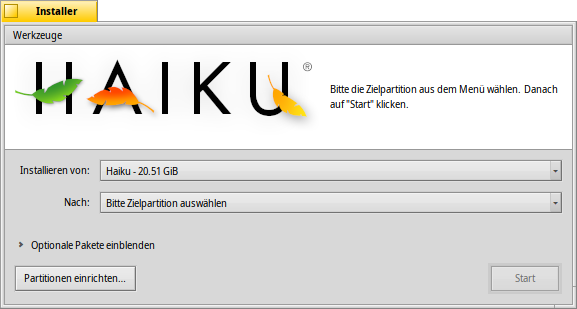

Installer
Installer
| Deskbar: | ||
| Ort: | /boot/system/apps/Installer | |
| Einstellungen: | keine |
Der Installer kopiert Haiku auf einen Datenträger. Mit ihm lässt sich das gerade laufende Haiku praktisch klonen - mitsamt aller installierten Software und mit allen Daten und Einstellungen. Natürlich verwendet man ihn auch für die Erstinstallation, wenn man von einer CD, DVD oder einem USB-Stick gebootet hat. Mehr dazu im Installation Guide (englisch).
Beim Start des Installer werden zunächst einige Informationen angezeigt. Das sind keine juristischen Formulierungen eines Endbenutzer-Lizenzvertrags (EULA), den man ja gewöhnlich ungelesen wegklickt, sondern tatsächlich nützliche Informationen:
Haiku ist noch im "Beta"-Stadium. Es wird dringend angeraten, Sicherheitskopien von wichtigen Dateien zu machen. Ein Datenverlust ist - obwohl unwahrscheinlich - nicht auszuschließen!
Der Installer benötigt eine vorbereitete Partition. Mit DriveSetup können Partitionen angelegt und formatiert werden. Bestehende Partitionen können jedoch nicht vergrößert oder verkleinert werden. Hierfür wird zusätzliche Software, wie die GParted LiveCD benötigt.
- Haiku kann zum Boot-Manager GRUB hinzugefügt werden. Wie das genau geht, wird in einer Online-Anleitung (Englisch) beschrieben.
Nach Bestätigung der Informationen durch Drücken von erscheint dieses Fenster:
Im ersten Auswahlmenü wird die Quelle der Installation ausgewählt. Dies kann entweder ein bereits installiertes Haiku sein, oder ein anderes Installationsmedium, wie zum Beispiel eine Haiku Installations-CD.
Das zweite Auswahlmenü bestimmt das Ziel der Installation. Das Zielmedium, das bereits vor dem Start des Installers existieren muss, wird durch die Installation vollständig überschrieben. Eine nachträgliche Rettung von darin gespeicherten Daten ist nicht möglich.
Durch einen Klick auf das Dreieck neben Optionale Pakete einblenden wird, falls vorhanden, eine Liste von zusätzlichen Programmpaketen angezeigt. Die Pakete können zusätzlich installiert werden.
Man sollte sorgfältig prüfen, ob das richtige Zielmedium ausgewählt ist, bevor die Installation gestartet wird. Über wird das Programm DriveSetup aufgerufen, in dem man eine Übersicht über die Partitionen erhält.
Mit Klick auf wird der eigentliche Installations-Prozess gestartet, der den /home/ und den /system/ Ordner auf die Zielpartition kopiert und diese bootfähig macht.
 Tools
Tools
Am Ende der Installation wird die Partition automatisch bootfähig gemacht. Durch die Installation anderer Betriebssysteme oder durch Partitionstools kann es (aus Versehen) passieren, dass der Boot-Sektor der Haiku-Partition überschrieben wird. Haiku startet dann nicht mehr. In diesem Fall kann man von der Installations-CD starten und die Partition wieder bootfähig machen: Unter die nicht mehr startfähige Haiku-Partition einstellen und im Menü den Eintrag auswählen. Das stellt den vorherigen Zustand wieder her.
Daneben kann im Menü mit noch ein Start-Menü in den Boot-Sektor geschrieben werden. Aus dem Menü lässt sich das zu bootende Betriebssystem auswählen. Näheres dazu unter BootManager.
Der Haiku BootManager wird nicht gebraucht, wenn man bereits einen Bootmanager wie GRUB benutzt (siehe oben) oder wenn Haiku als einziges Betriebssystem auf dem Rechner installiert ist.